Benchmark / Use cases / Methane plumes / Results
Methane plumes
Does compression change the plume a methane detector finds in Sentinel-2 and Landsat 8/9?
How it is measured
delta_iou is the detection's intersection over union with the plume mask on the compressed copy, minus the same value on the original. A negative value means less overlap with the mask, from missed plume pixels or false alarms around it. On the originals, the median IoU is 0.59 in Sentinel-2 and 0.55 in Landsat.
Compression
GeoZL PIVCO, GeoZL PFOR and JPEG XL compress the two shortwave infrared bands of the target and each background. The plume mask stays untouched. The root-mean-square error limit doubles from 1 to 64 × 10⁻⁴ reflectance in both sensors. One DN is 10⁻⁴ reflectance for Sentinel-2 L1C and 2 × 10⁻⁵ for Landsat. The sweep therefore covers 1 to 64 DN in Sentinel-2 and 5 to 320 DN in Landsat. The GeoZL recipes (geozl-med-pivco and geozl-planar-pfor) share the benchmark's lossy quantiser, so they decode to the same arrays and differ in size. JPEG XL searches for a distance within the limit and stores an array losslessly if none fits.
Compression ratio and delta_iou
Each point is a bound on the root-mean-square error, written next to it in 10⁻⁴ of reflectance, at the compression ratio over all the samples of the panel and the median delta_iou. Where JPEG XL finds no distance within the bound it stores the array losslessly, so those bounds share one point, marked lossless.
Samples
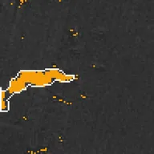
methane-s2-00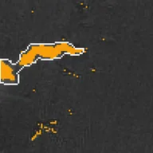
methane-s2-01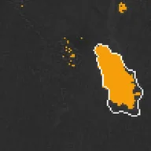
methane-s2-02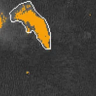
methane-s2-03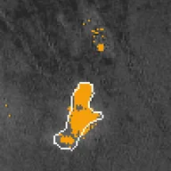
methane-s2-04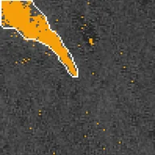
methane-s2-05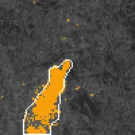
methane-s2-06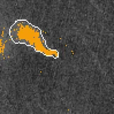
methane-s2-07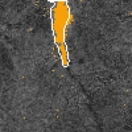
methane-s2-08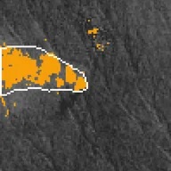
methane-s2-09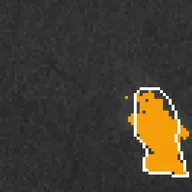
methane-l89-00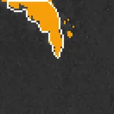
methane-l89-01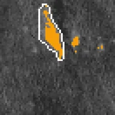
methane-l89-02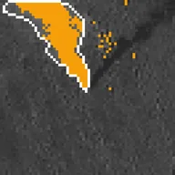
methane-l89-03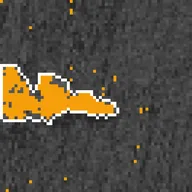
methane-l89-04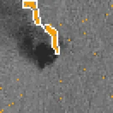
methane-l89-05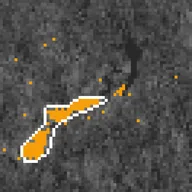
methane-l89-06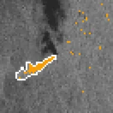
methane-l89-07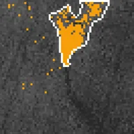
methane-l89-08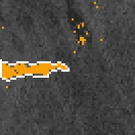
methane-l89-09